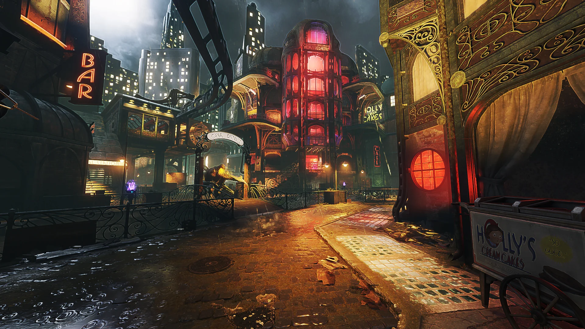
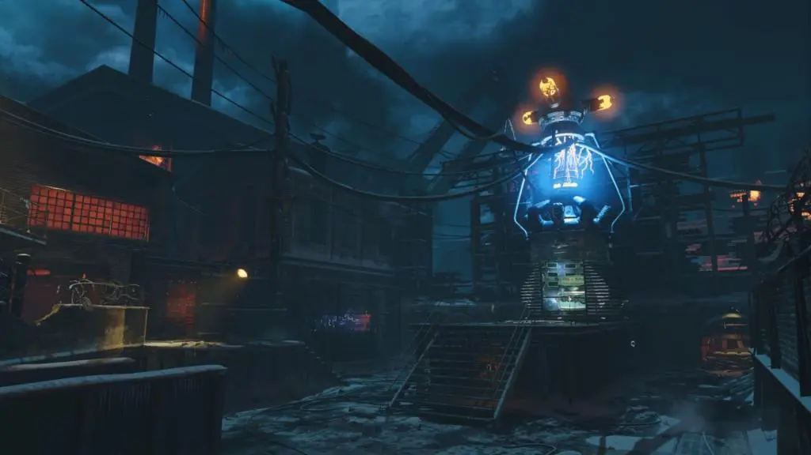
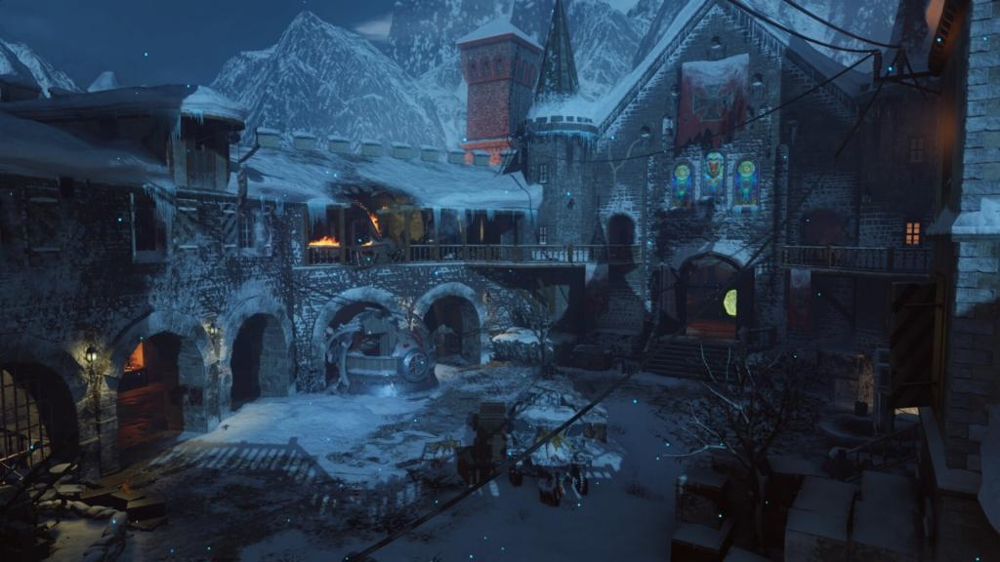
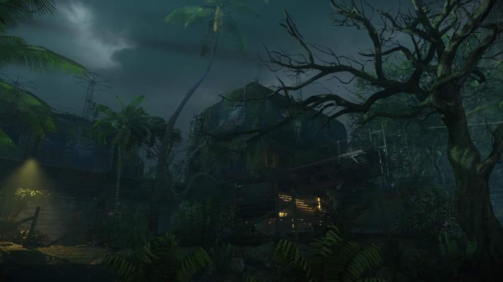
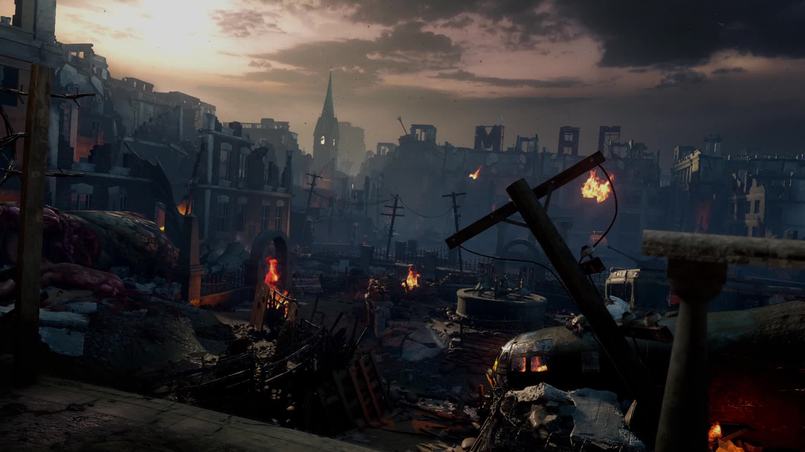
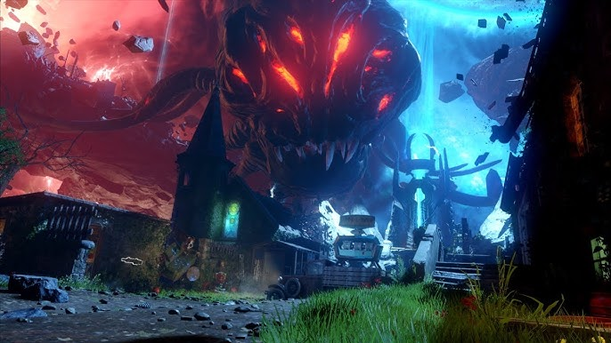

Problema
Informação extensa e interligada
O universo de referência reúne histórias, personagens, objetos, equipamentos e eventos conectados entre seis mapas. Uma página longa e idêntica para todos deixaria a consulta cansativa.
UI/UX Case Study
Uma experiência digital cinematográfica para organizar mapas, personagens, equipamentos e narrativas em seis dossiês interativos.
Design e desenvolvimento: Erick Augusto
01 / Contexto
Problema
O universo de referência reúne histórias, personagens, objetos, equipamentos e eventos conectados entre seis mapas. Uma página longa e idêntica para todos deixaria a consulta cansativa.
Solução
A Home funciona como arquivo mestre. Cada mapa mantém a mesma organização principal, mas recebe uma experiência interativa ligada à própria atmosfera.
02 / Arquitetura
Depois do primeiro dossiê, o usuário entende onde encontrar cada tipo de informação.
03 / Sistema visual
Display
BAHNSCHRIFT
Títulos condensados e chamadas de alto impacto.
Interface e leitura
Segoe UI
Interface técnica com leitura confortável em textos longos.
04 / Experiências

Atlas ritual

Rede de teletransportes

Caminhos elementais

Laboratório botânico

Console de cerco

Constelação dimensional
05 / Interações
06 / Processo
A inteligência artificial acelerou pesquisa, exploração e documentação. As decisões de interface, revisão de conteúdo e implementação foram avaliadas e adaptadas manualmente.
07 / Resultado